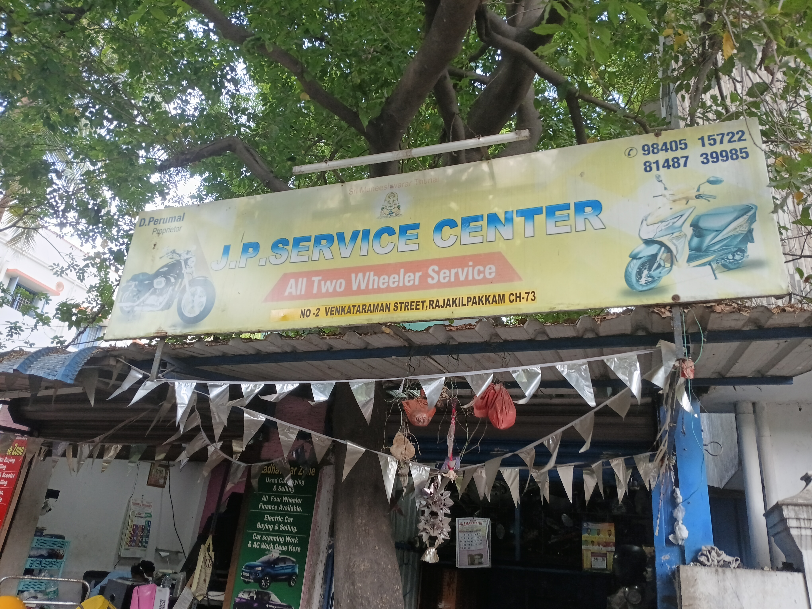
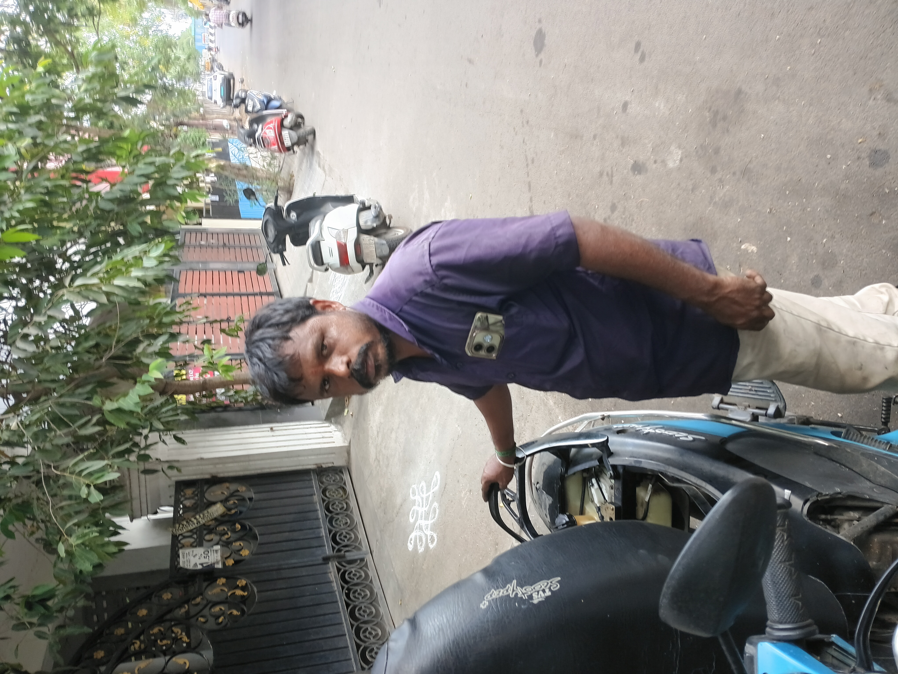
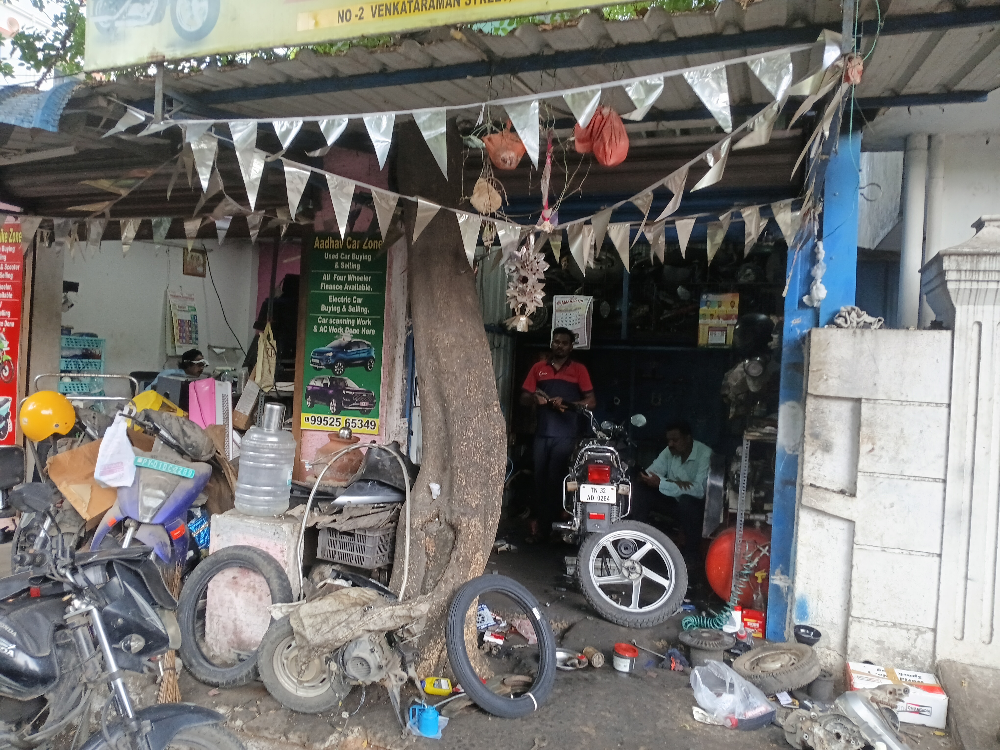
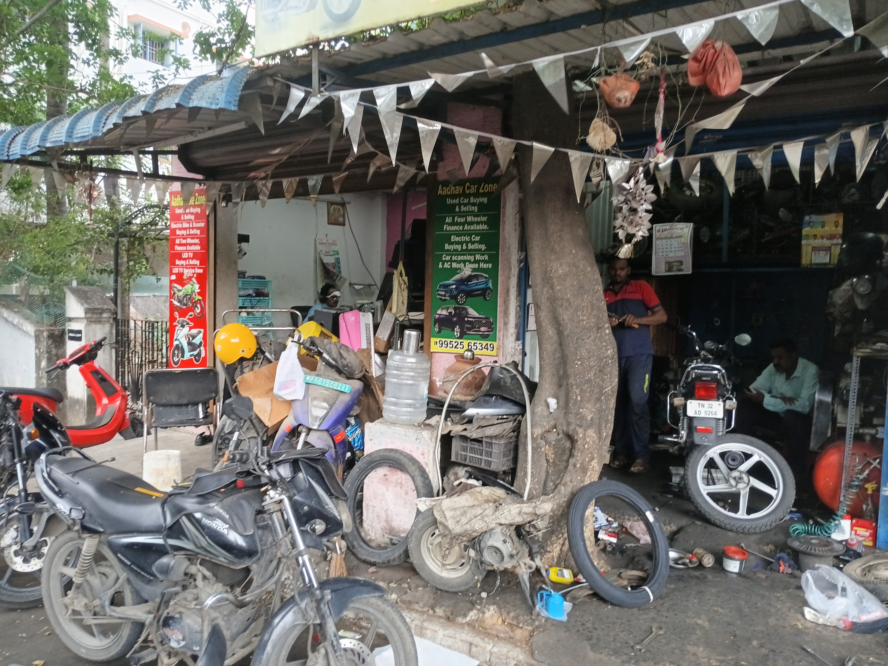

All Two Wheeler Service · Trusted by the neighbourhood since day one
What we do
Bikes, scooters, mopeds — petrol or electric. We handle it all at No. 2 Venkataraman Street.
Why customers keep coming back
Proprietor D. Perumal has been the go-to mechanic in Rajakilpakkam for years — the kind of person your neighbours recommend without hesitation.
Inside the shop




Swipe left/right to see more →
A little something extra
D. Perumal is a well-known friend to the street dogs of Rajakilpakkam. When you visit the shop, don't be surprised to find a friendly furry face or two lounging nearby — they know a good person when they see one. We believe a good neighbourhood looks out for everyone, two legs or four.
Get in touch
We're right there at No. 2 Venkataraman Street — easy to find, easy to reach.